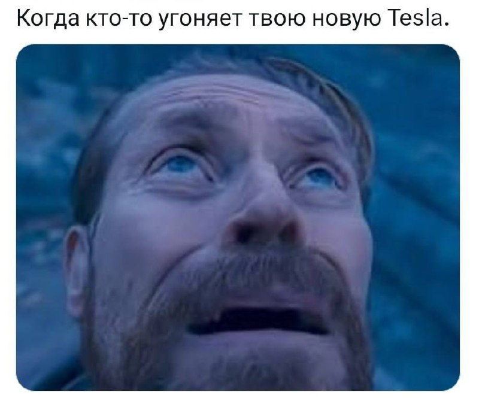
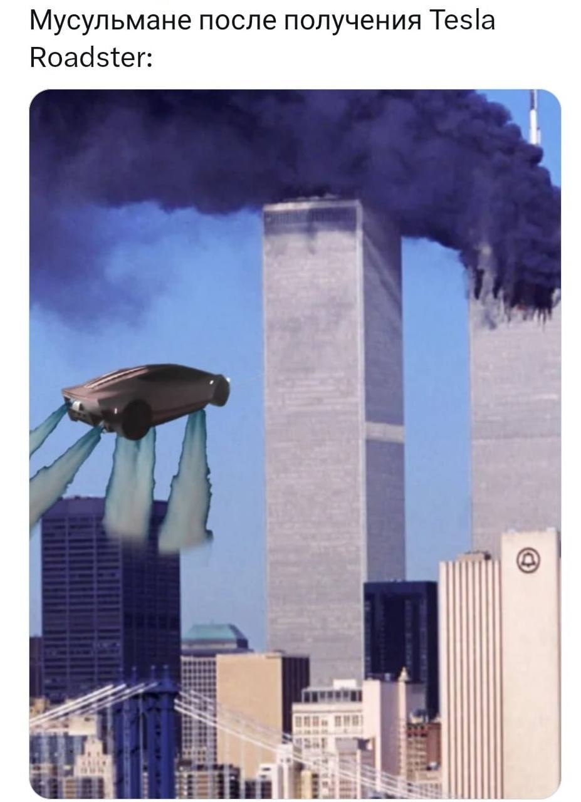
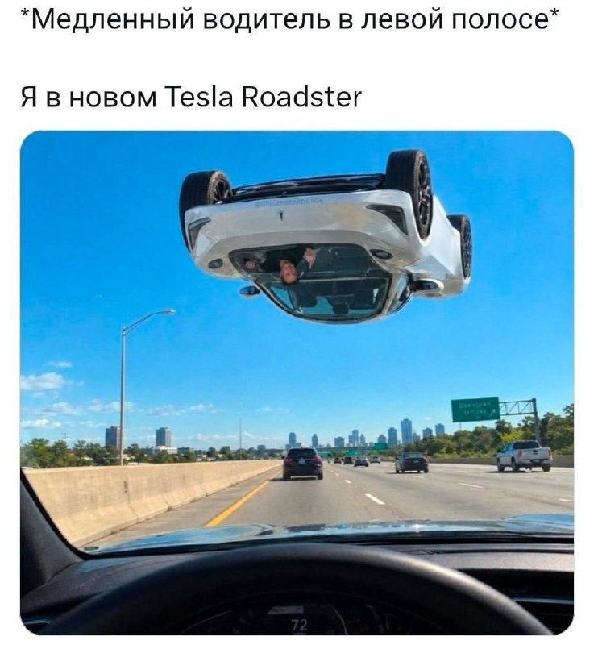
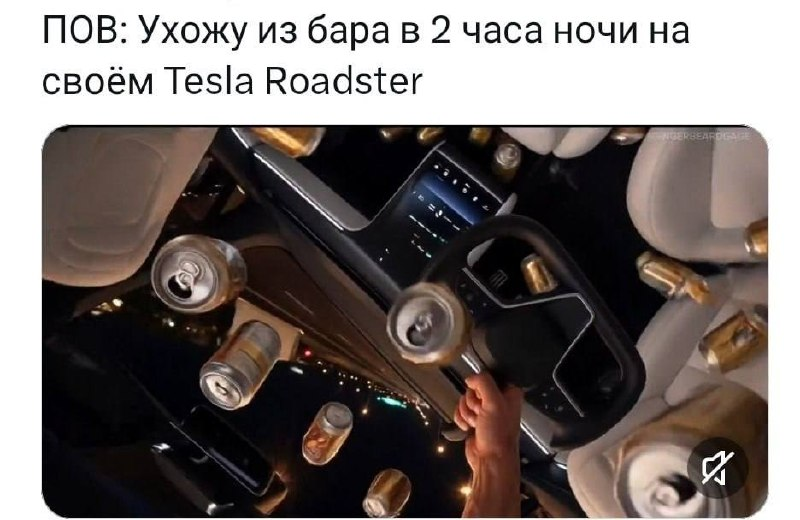
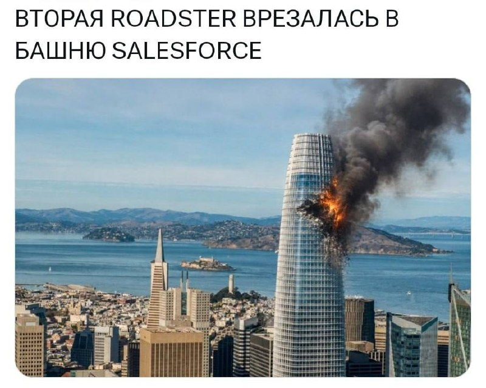
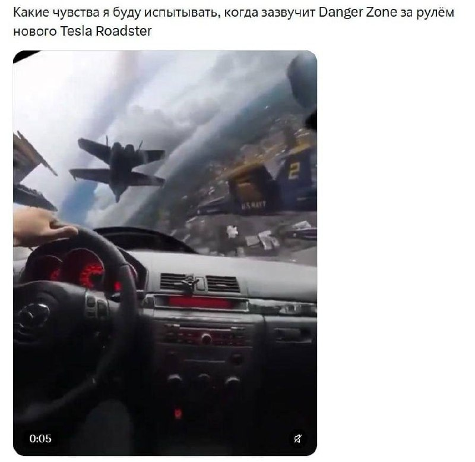
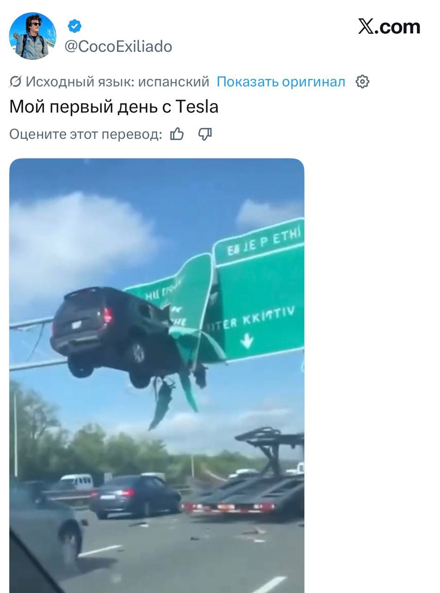
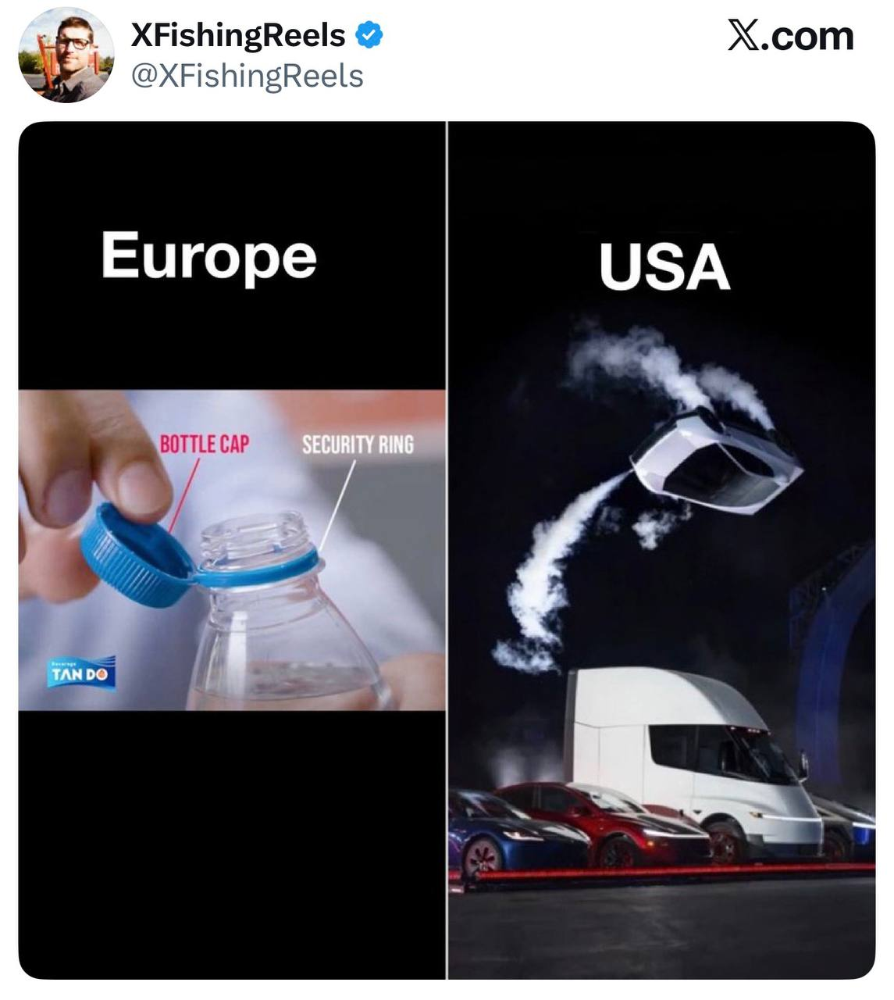

MDK
@mudak
MDK
@mudak
Илон Маск не успел показать новую летающую Tesla Roadster как интернет тут же наполнился кучей мемов








Илон Маск не успел показать новую летающую Tesla Roadster, как интернет тут же наполнился кучей мемов